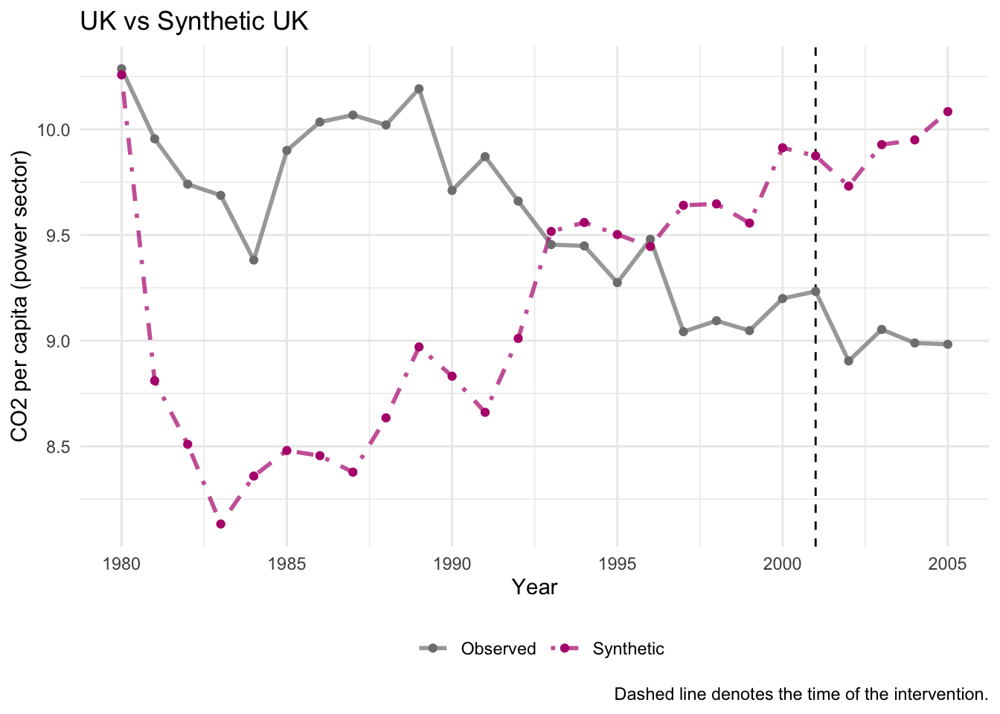
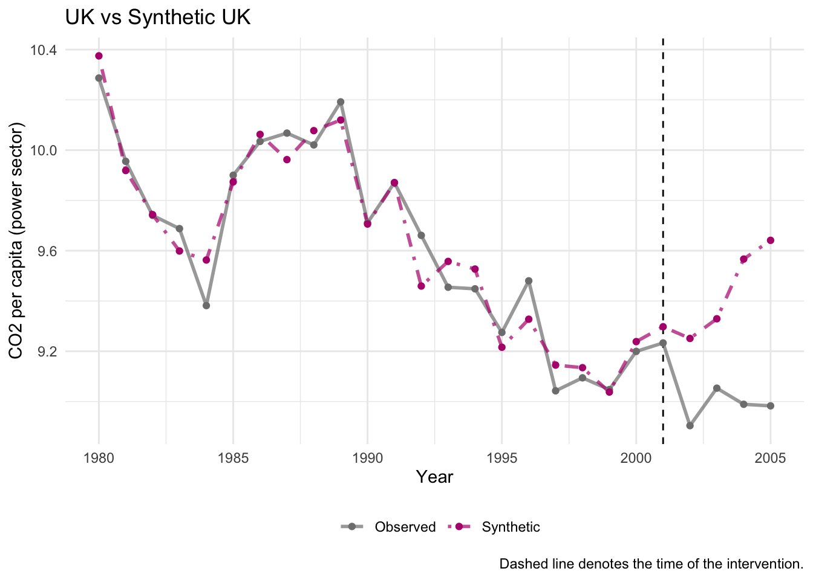
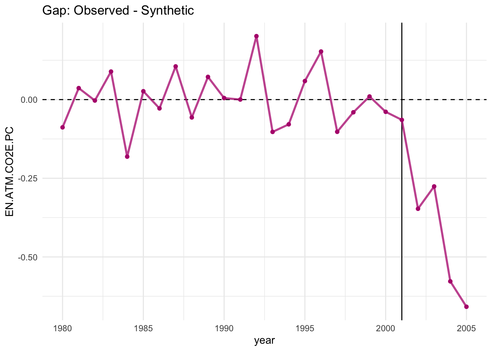
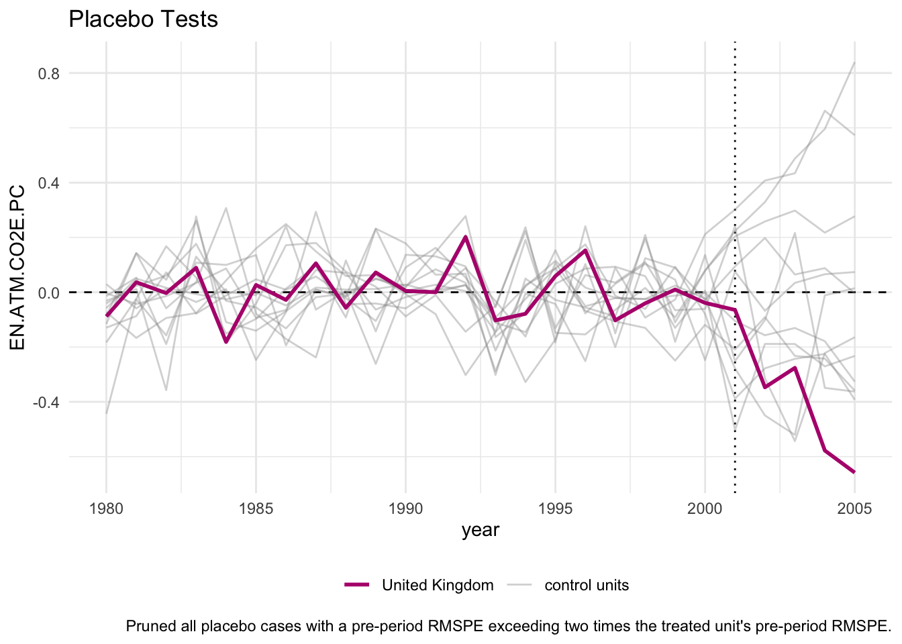
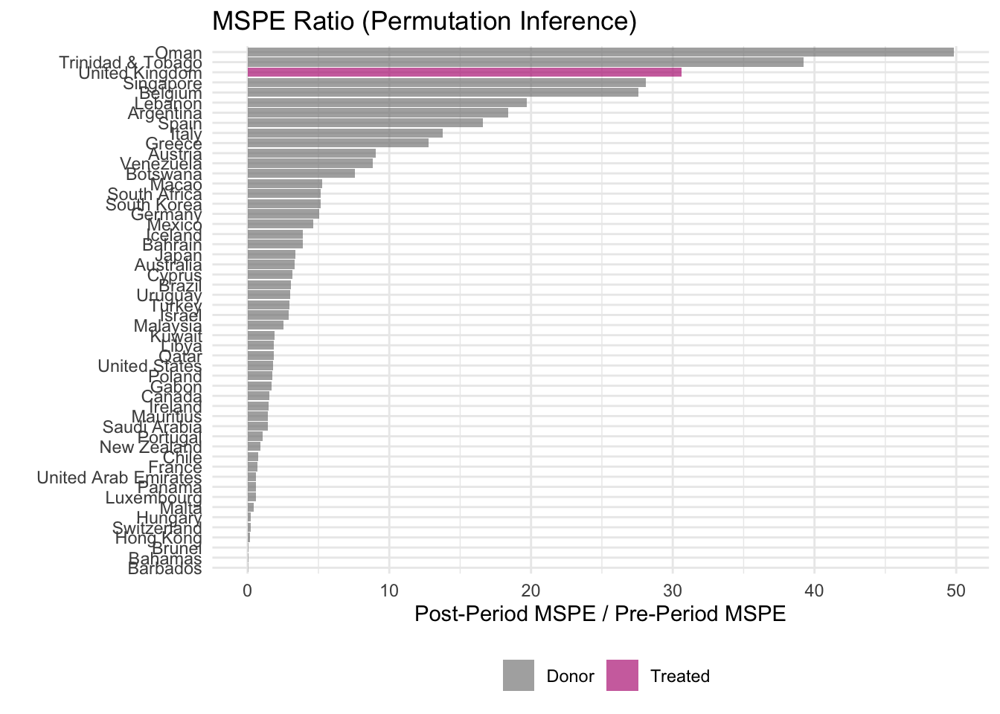

library(tidysynth) # for synthetic control
library(tidyverse)
library(patchwork) # for combining plotstry_to_replicate_pt2
Data
data: all countries
data_OECD: similar economic conditions
data_OECD_HIC: + high income countries
data_OECD_HIC_UMC: + upper middle countries
Load in dataframe
load_rdata_files <- function(data_dir = "Data") {
files <- list.files(data_dir, pattern = "\\.Rdata$", full.names = TRUE, ignore.case = TRUE)
for (f in files) {
env <- new.env()
load(f, envir = env)
obj_name <- tools::file_path_sans_ext(basename(f))
assign(obj_name, as.data.frame(get(ls(env)[1], envir = env)), envir = .GlobalEnv)
}
}
load_rdata_files()With data_OECD_HIC_UMC
Declare the Synthetic Control
scm_data <- data_OECD_HIC_UMC %>%
synthetic_control(
outcome = `EN.ATM.CO2E.PC`,
unit = country,
time = year,
i_unit = "United Kingdom",
i_time = 2001,
generate_placebos = TRUE) %>%
generate_predictor( # Predictors (pre-treatment averages)
time_window = 1980:2001,
mean.preT = mean(mean.preT, na.rm = TRUE)) %>%
generate_weights(
optimization_window = 1980:2001,
margin_ipop = 0.02,
sigf_ipop = 7,
bound_ipop = 6) %>%
generate_control() # Generate synthetic controlPlot Trends
p1 <- scm_data %>%
plot_trends() +
labs(title = "UK vs Synthetic UK",
y = "CO2 per capita (power sector)",
x = "Year")Warning: Using `size` aesthetic for lines was deprecated in ggplot2 3.4.0.
ℹ Please use `linewidth` instead.
ℹ The deprecated feature was likely used in the tidysynth package.
Please report the issue to the authors.p1
scm_data <- data_OECD_HIC_UMC %>%
synthetic_control(
outcome = EN.ATM.CO2E.PC,
unit = country,
time = year,
i_unit = "United Kingdom",
i_time = 2001,
generate_placebos = TRUE) %>%
generate_predictor(time_window = 1980, EN.ATM.CO2E.PC_1980 = mean(EN.ATM.CO2E.PC)) %>%
generate_predictor(time_window = 1981, EN.ATM.CO2E.PC_1981 = mean(EN.ATM.CO2E.PC)) %>%
generate_predictor(time_window = 1982, EN.ATM.CO2E.PC_1982 = mean(EN.ATM.CO2E.PC)) %>%
generate_predictor(time_window = 1983, EN.ATM.CO2E.PC_1983 = mean(EN.ATM.CO2E.PC)) %>%
generate_predictor(time_window = 1984, EN.ATM.CO2E.PC_1984 = mean(EN.ATM.CO2E.PC)) %>%
generate_predictor(time_window = 1985, EN.ATM.CO2E.PC_1985 = mean(EN.ATM.CO2E.PC)) %>%
generate_predictor(time_window = 1986, EN.ATM.CO2E.PC_1986 = mean(EN.ATM.CO2E.PC)) %>%
generate_predictor(time_window = 1987, EN.ATM.CO2E.PC_1987 = mean(EN.ATM.CO2E.PC)) %>%
generate_predictor(time_window = 1988, EN.ATM.CO2E.PC_1988 = mean(EN.ATM.CO2E.PC)) %>%
generate_predictor(time_window = 1989, EN.ATM.CO2E.PC_1989 = mean(EN.ATM.CO2E.PC)) %>%
generate_predictor(time_window = 1990, EN.ATM.CO2E.PC_1990 = mean(EN.ATM.CO2E.PC)) %>%
generate_predictor(time_window = 1991, EN.ATM.CO2E.PC_1991 = mean(EN.ATM.CO2E.PC)) %>%
generate_predictor(time_window = 1992, EN.ATM.CO2E.PC_1992 = mean(EN.ATM.CO2E.PC)) %>%
generate_predictor(time_window = 1993, EN.ATM.CO2E.PC_1993 = mean(EN.ATM.CO2E.PC)) %>%
generate_predictor(time_window = 1994, EN.ATM.CO2E.PC_1994 = mean(EN.ATM.CO2E.PC)) %>%
generate_predictor(time_window = 1995, EN.ATM.CO2E.PC_1995 = mean(EN.ATM.CO2E.PC)) %>%
generate_predictor(time_window = 1996, EN.ATM.CO2E.PC_1996 = mean(EN.ATM.CO2E.PC)) %>%
generate_predictor(time_window = 1997, EN.ATM.CO2E.PC_1997 = mean(EN.ATM.CO2E.PC)) %>%
generate_predictor(time_window = 1998, EN.ATM.CO2E.PC_1998 = mean(EN.ATM.CO2E.PC)) %>%
generate_predictor(time_window = 1999, EN.ATM.CO2E.PC_1999 = mean(EN.ATM.CO2E.PC)) %>%
generate_predictor(time_window = 2000, EN.ATM.CO2E.PC_2000 = mean(EN.ATM.CO2E.PC)) %>%
generate_weights(optimization_window = 1980:2001) %>%
generate_control()p1 <- scm_data %>%
plot_trends() +
labs(title = "UK vs Synthetic UK",
y = "CO2 per capita (power sector)",
x = "Year")
p1
Plot Gaps (Treatment Effect)
p2 <- scm_data %>%
plot_differences() +
labs(title = "Gap: Observed - Synthetic")
p2Ignoring unknown labels:
• colour : ""
• linetype : ""
Placebo Tests
p3 <- scm_data %>%
plot_placebos() +
labs(title = "Placebo Tests")
p3
MSPE Ratio Plot
p4 <- scm_data %>%
plot_mspe_ratio() +
labs(title = "MSPE Ratio (Permutation Inference)")
p4Ignoring unknown labels:
• colour : ""
Balance Table
balance <- scm_data %>%
grab_balance_table()
balance# A tibble: 21 × 4
variable `United Kingdom` `synthetic_United Kingdom` donor_sample
<chr> <dbl> <dbl> <dbl>
1 EN.ATM.CO2E.PC_1980 10.3 10.4 10.7
2 EN.ATM.CO2E.PC_1981 9.96 9.92 9.16
3 EN.ATM.CO2E.PC_1982 9.74 9.74 8.83
4 EN.ATM.CO2E.PC_1983 9.69 9.60 8.41
5 EN.ATM.CO2E.PC_1984 9.38 9.56 8.66
6 EN.ATM.CO2E.PC_1985 9.90 9.87 8.78
7 EN.ATM.CO2E.PC_1986 10.0 10.1 8.75
8 EN.ATM.CO2E.PC_1987 10.1 9.96 8.64
9 EN.ATM.CO2E.PC_1988 10.0 10.1 8.90
10 EN.ATM.CO2E.PC_1989 10.2 10.1 9.26
# ℹ 11 more rows